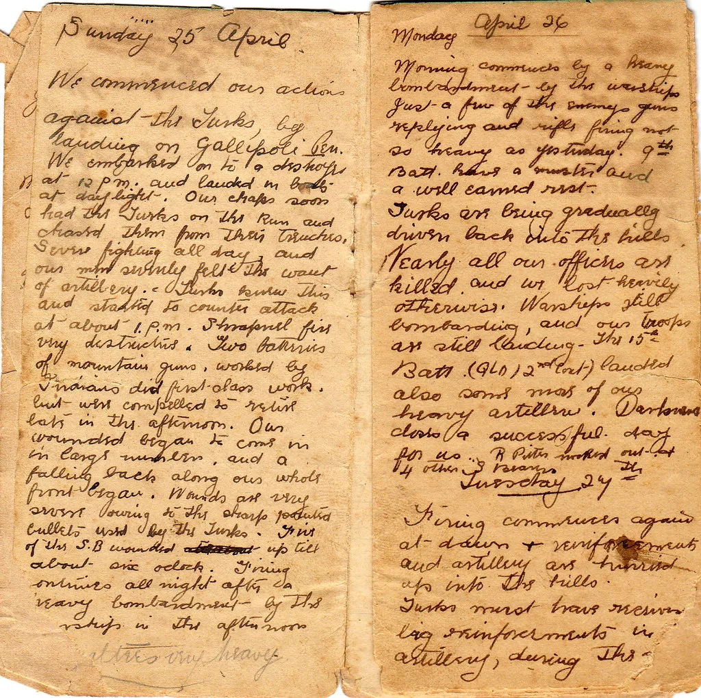
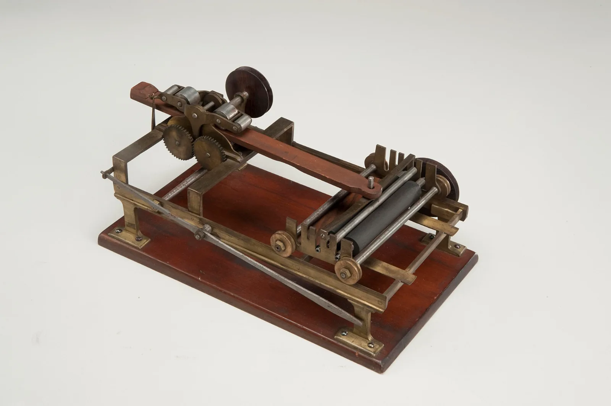
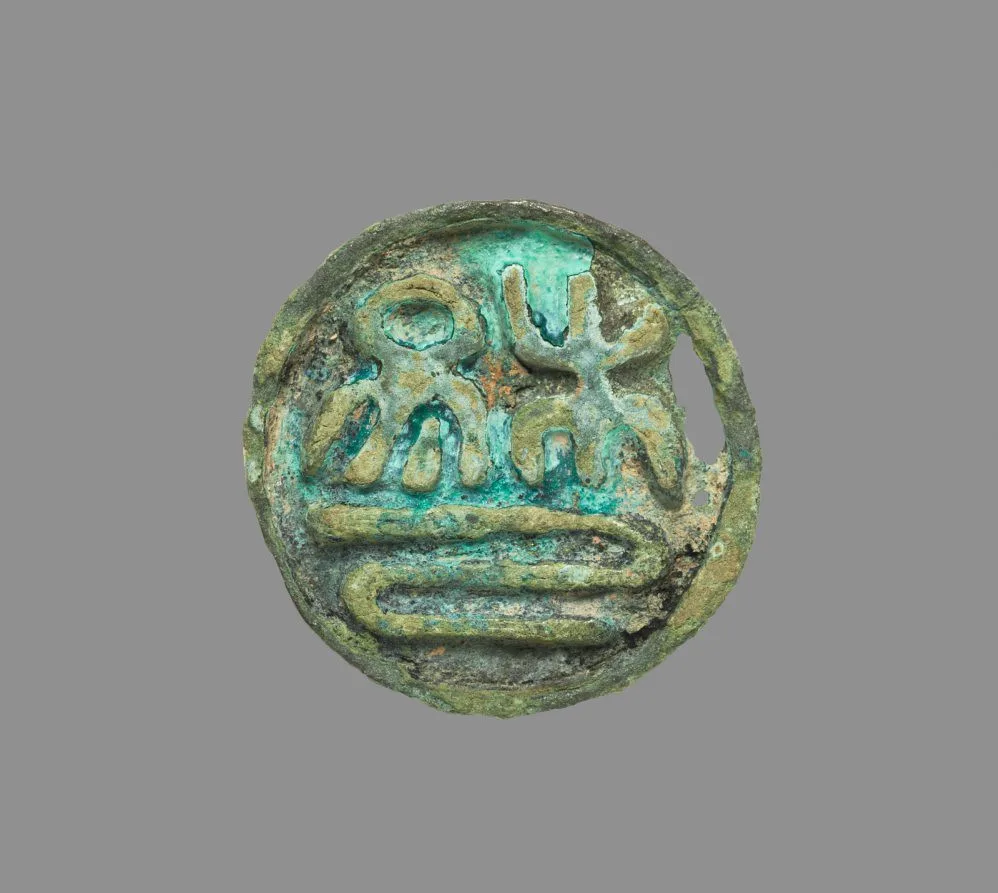
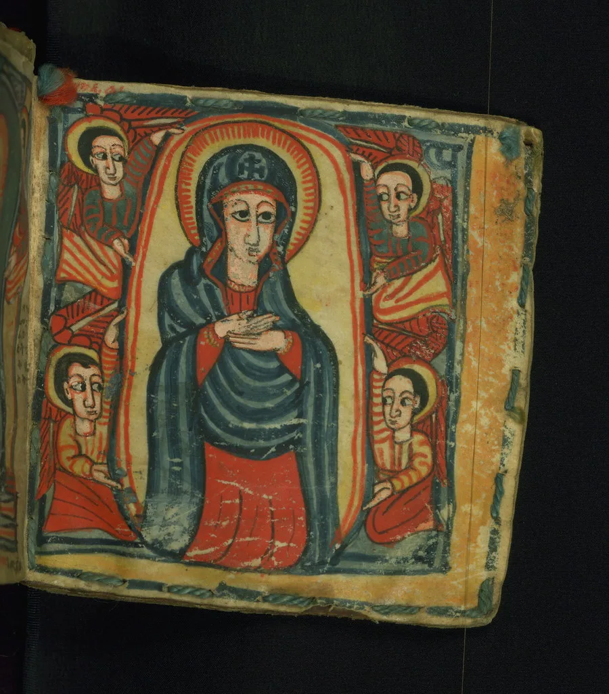

서울 후암동 · 활판과 리소로 한 번에 200부. 다 팔리면 다시 찍지 않습니다.




활판으로 찍어 글자마다 눌린 자국이 남습니다. 표지는 손으로 한 장씩 재단했습니다.
형광 분홍과 먹 두 도. 겹치는 자리에서 나오는 세 번째 색을 그대로 뒀습니다.
폐업 인쇄소에서 넘겨받은 활자를 하나씩 찍어 정리했습니다. 크기별 견본과 자간표 포함.
접으면 손바닥만 합니다. 120g 중성지, 접힘선은 미리 눌러 두었습니다.
주문은 메일로만 받습니다. 재고가 있으면 사흘 안에 부칩니다. 서점 입고 문의도 같은 주소로.